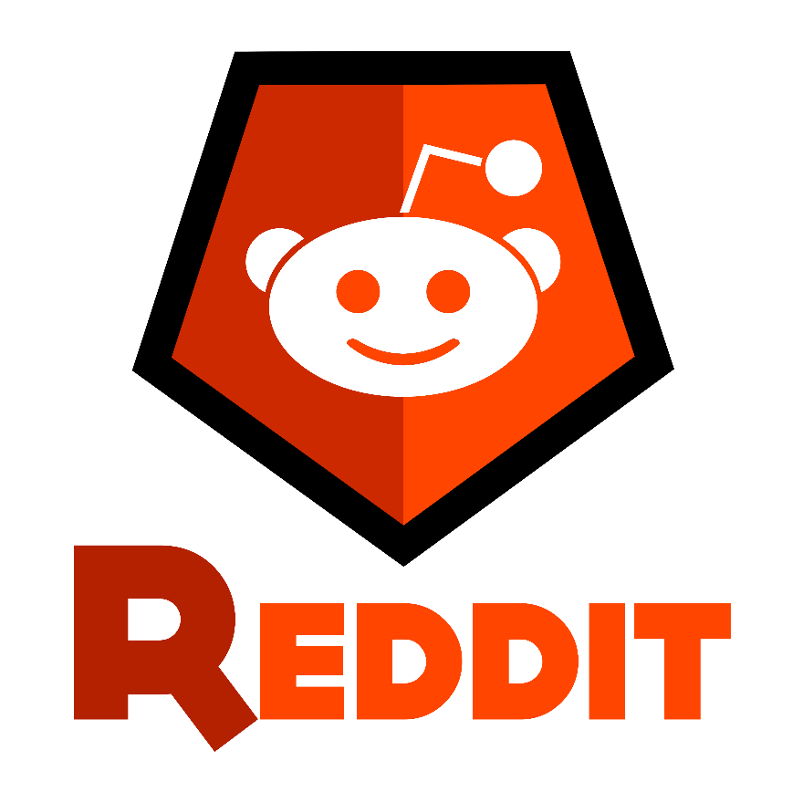
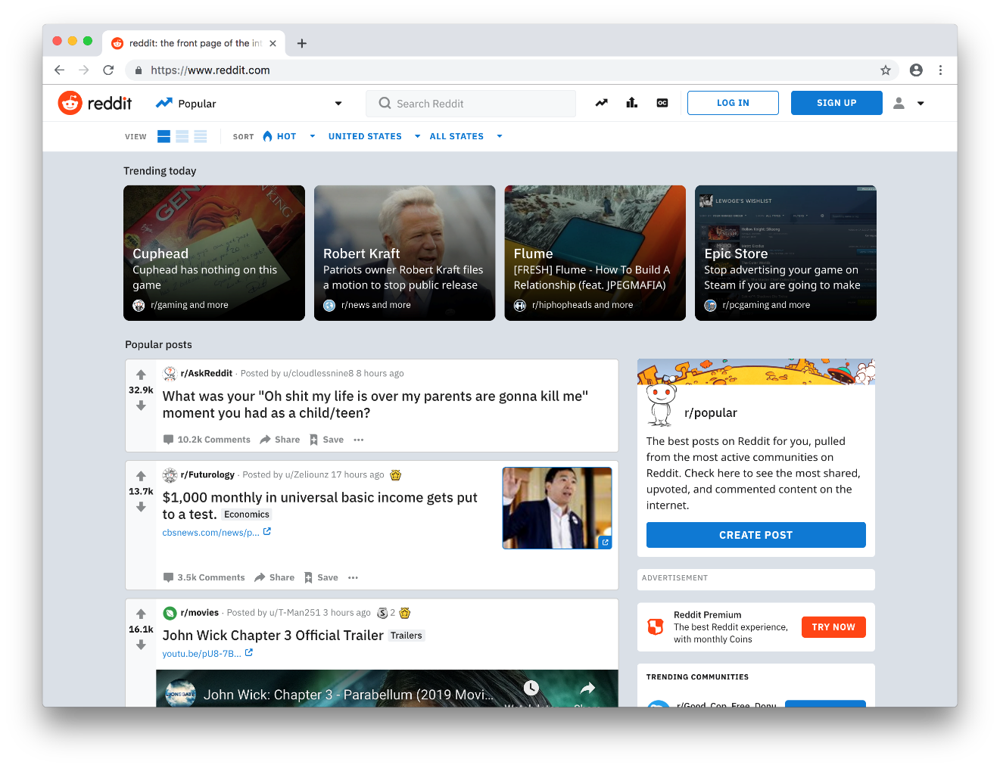

Site Overview

Reddit is a website comprising user-generated content—including photos, videos, links, and text-based posts—and discussions of this content in what is essentially a bulletin board system. The name "Reddit" is a play-on-words with the phrase "read it", i.e., "I read it on Reddit." As of 2018, there are approximately 330 million Reddit users, called "redditors". The site's content is divided into categories or communities known on-site as "subreddits", of which there are more than 138,000 active communities.
As a network of communities, Reddit's core content consists of posts from its users. Users can comment on others' posts to continue the conversation. A key feature to Reddit is that users can cast positive or negative votes, called upvotes and downvotes respectively, for each post and comment on the site. The number of upvotes or downvotes determines the posts' visibility on the site, so the most popular content is displayed to the most people. Users can also earn "karma" for their posts and comments, which reflects the user's standing within the community and their contributions to Reddit.
The most popular posts from the site's numerous subreddits are visible on the front page to those who browse the site without an account. By default for those users, the front page will display the subreddit r/popular, featuring top-ranked posts across all of Reddit, excluding not-safe-for-work communities and others that are most commonly filtered out by users (even if they are safe for work). The subreddit r/all does not filter topics. Registered users who subscribe to subreddits see the top content from the subreddits to which they subscribe on their personal front pages.
Front-page rank—for both the general front page and for individual subreddits—is determined by a combination of factors, including the age of the submission, positive ("upvoted") to negative ("downvoted") feedback ratio, and the total vote-count.
As of 2018, there were about 330 million Reddit users, called "redditors". Registering an account with Reddit is free and does not require an email address. In addition to commenting and voting, registered users can also create their own subreddit on a topic of their choosing. In Reddit style, usernames begin with "u/". For example, noteworthy redditors include u/Poem_for_your_sprog, who responds to messages across Reddit in verse, and u/Shitty_Watercolour, who posts paintings in response to posts.
Subreddits are overseen by moderators, Reddit users who earn the title by creating a subreddit or being promoted by a current moderator. These moderators are volunteers who manage their communities, set and enforce community-specific rules, remove posts and comments that violate these rules, and generally work to keep discussions in their subreddit on topic. Admins, by contrast, are paid to work for Reddit.
Reddit Premium (formerly Reddit Gold) is a premium membership that allows users to view the site ad-free. Users may also be gifted coins if another user particularly valued the comment or post, generally due to humorous or high-quality content. Reddit Premium unlocks several features not accessible to regular users, such as comment highlighting, exclusive subreddits, and a personalized Snoo (known as a "snoovatar"). Reddit Gold was renamed Reddit Premium in 2018. In addition to gold coins, users can gift silver and platinum coins to other users as rewards for quality content.
On the site, redditors commemorate their "cake day" once a year, on the anniversary of the day their account was created. Cake day adds an icon of a small slice of cake next to the user's name for 24 hours.
In 2017, Reddit developed its own real-time chat software for the site. While some established subreddits have used third-party software to chat about their communities, the company built chat functions that it hopes will become an integral part of Reddit. Individual chat rooms were rolled out in 2017 and community chat rooms for members of a given subreddit were rolled out in 2018.
History
The idea and initial development of Reddit originated with then college roommates Steve Huffman and Alexis Ohanian in 2005. Huffman and Ohanian attended a lecture by programmer-entrepreneur Paul Graham in Boston, Massachusetts, during their spring break from University of Virginia. After speaking with Huffman and Ohanian following the lecture, Graham invited the two to apply to his startup incubator Y Combinator. Their initial idea, My Mobile Menu, was unsuccessful, and was intended to allow users to order food by SMS text messaging. During a brainstorming session to pitch another startup, the idea was created for what Graham called the "front page of the Internet". For this idea, Huffman and Ohanian were accepted in Y Combinator's first class. Supported by the funding from Y Combinator, Huffman coded the site in Common Lisp and together with Ohanian launched Reddit in June 2005.
The team expanded to include Christopher Slowe in November 2005. Between November 2005 and January 2006, Reddit merged with Aaron Swartz's company Infogami, and Swartz became an equal owner of the resulting parent company, Not A Bug. Huffman and Ohanian sold Reddit to Condé Nast Publications, owner of Wired, on October 31, 2006, for a reported $10 million to $20 million and the team moved to San Francisco. In January 2007, Swartz was fired for undisclosed reasons.
Huffman and Ohanian left Reddit in 2009. Huffman went on to co-found Hipmunk with Adam Goldstein, and later recruited Ohanian and Slowe to his new company. After Huffman and Ohanian left Reddit, Erik Martin, who joined the company as a community manager in 2008 and later became general manager is 2011, played a role in Reddit's growth. VentureBeat noted that Martin was "responsible for keeping the site going" under Condé Nast's ownership. Martin facilitated the purchase of Reddit Gifts and led charity initiatives.
Reddit launched two different ways of advertising on the site in 2009. The company launched sponsored content and a self-serve ads platform that year. Reddit launched its Reddit Gold benefits program in July 2010, which offered new features to editors and created a new revenue stream for the business that did not rely on banner ads. On September 6, 2011, Reddit became operationally independent of Condé Nast, operating as a separate subsidiary of its parent company, Advance Publications. Reddit and other websites participated in a 12-hour sitewide blackout on January 18, 2012, in protest of the Stop Online Piracy Act. In May 2012, Reddit joined the Internet Defense League, a group formed to organize future protests.
Yishan Wong joined Reddit as CEO in 2012. Wong resigned from Reddit in 2014, after more than two years at the company, citing disagreements about his proposal to move the company's offices from San Francisco to nearby Daly City, but also the "stressful and draining" nature of the position. Ohanian credited Wong with leading the company as its user base grew from 35 million to 174 million. Wong oversaw the company as it raised $50 million in funding and spun off as an independent company. Also during this time, Reddit began accepting the digital currency Bitcoin for its Reddit Gold subscription service through a partnership with bitcoin payment processor Coinbase in February 2013. Ellen Pao replaced Wong as interim CEO in 2014 and resigned in 2015 amid a user revolt over the firing of a popular Reddit employee. During her tenure, Reddit initiated an anti-harassment policy, banned involuntary sexualization, and banned several forums that focused on bigoted content or harassment of individuals.
After five years away from the company, Ohanian and Huffman returned to leadership roles at Reddit: Ohanian became the full-time executive chairman in November 2014 following Wong's resignation, while Pao's departure on July 10, 2015, led to Huffman's return as the company's chief executive. After Huffman rejoined Reddit as CEO, he launched Reddit's iOS and Android apps, fixed Reddit's mobile website, and created A/B testing infrastructure. The company launched a major redesign of its website in April 2018. Huffman said new users were turned off from Reddit because it had looked like a "dystopian Craigslist". Reddit also instituted several technological improvements, such as a new tool that allows users to hide posts, comments, and private messages from selected redditors in an attempt to curb online harassment, and new content guidelines. These new content guidelines were aimed at banning content inciting violence and quarantining offensive material. Slowe, the company's first employee, rejoined Reddit in 2017 as chief technology officer. Reddit's largest round of funding came in 2017, when the company raised $200 million and was valued at $1.8 billion. The funding supported Reddit's site redesign and video efforts.